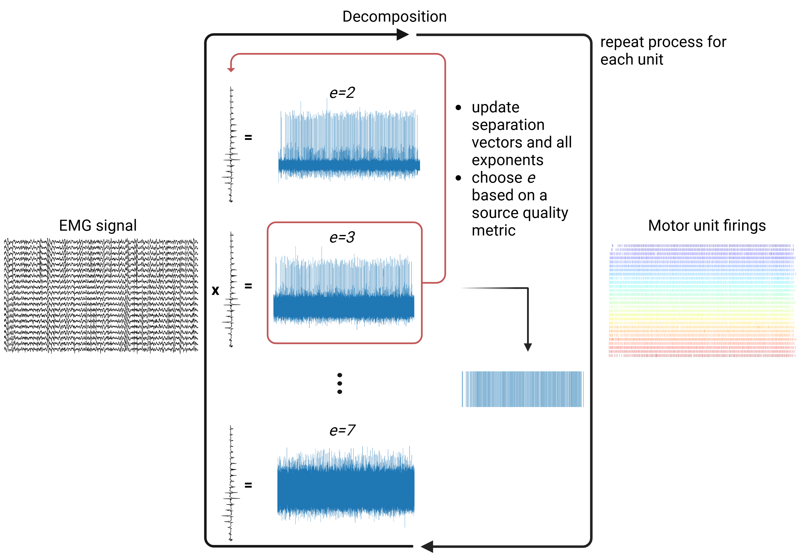
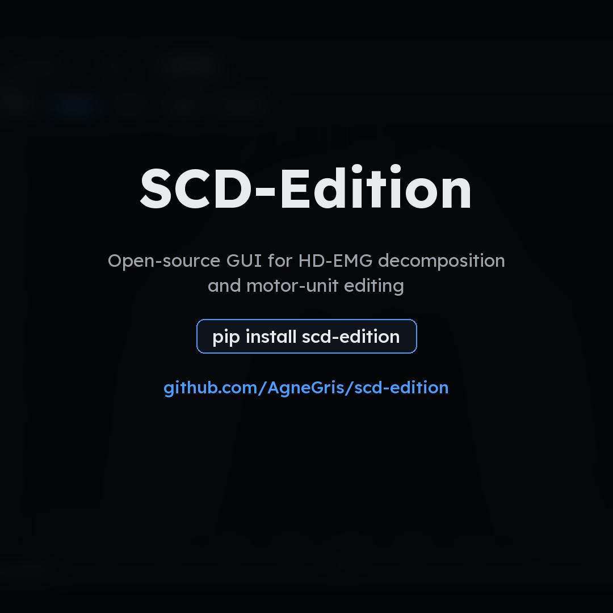
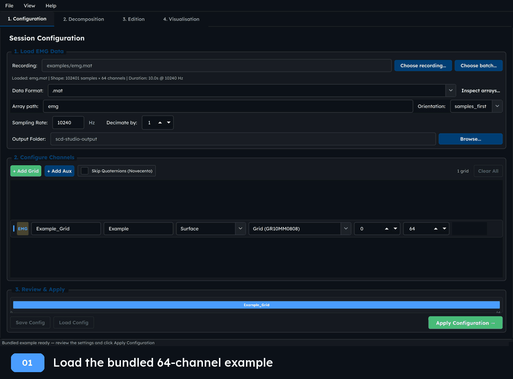
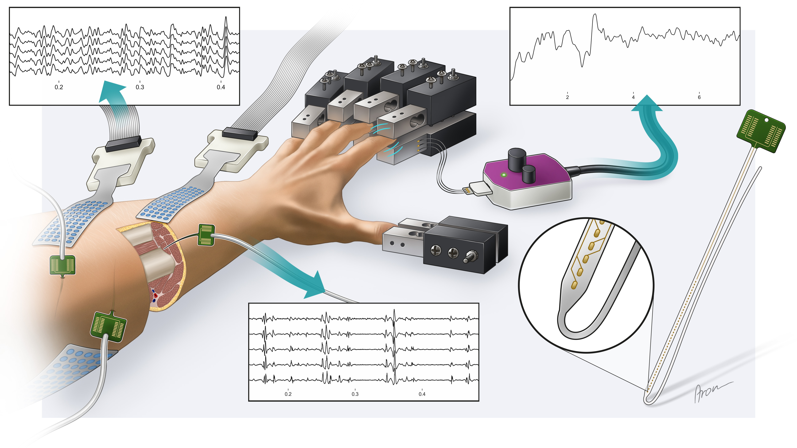

Swarm Contrastive Decomposition
A Python/PyTorch package using particle-swarm-optimised source separation to decompose high-density EMG.


Research Associate · Machine learning for neural interfaces
Imperial–Meta Wearable Neural Interfaces Research Centre · Imperial College London
I develop machine-learning and signal-processing methods to extract individual motor neuron activity from high-density electromyography (EMG). I apply this work to neural interfaces and assistive technology, including research after spinal cord injury.
Since 2025, I have been a Research Associate at the Imperial–Meta Wearable Neural Interfaces Research Centre at Imperial College London, working with Prof. Dario Farina. My current work connects EMG signal processing with wearable neural interfaces and their potential applications in neurorehabilitation.
During my PhD in AI and Machine Learning in the CDT in AI4Health at the Department of Computing, Imperial College London, I studied high-density electrode arrays and methods for connecting with the human spinal cord. I also build open-source tools for EMG decomposition and review.
A Python/PyTorch package using particle-swarm-optimised source separation to decompose high-density EMG.

A Qt/Python desktop application for GPU-accelerated decomposition and motor unit review and editing.


Developing methods to separate individual motor unit activity from complex EMG recordings.
NeurIPS 2026 (accepted); arXiv:2406.19581
The Journal of Physiology, 603(8), 2281–2300 (2025)
IEEE Transactions on Biomedical Engineering, 72(1), 227–237 (2025)
Using motor neuron activity to enable multidimensional control after spinal cord injury, including a soft assistive glove.
Nature Human Behaviour (accepted); medRxiv preprint, 2025
medRxiv preprint, 2025
Studying how electrode design and sampling affect the motor units that can be recorded.

IEEE Transactions on Neural Systems and Rehabilitation Engineering, 33, 620–629 (2025)
Sensors, 24(6), 1810 (2024)
Evaluating what motor neuron recordings can decode and how decomposition methods are benchmarked.
Interface Focus, 16, 20250063 (2026)
NeurIPS 2025 · Datasets & Benchmarks Track
* Equal contribution. Selected papers; view all publications on Google Scholar.
For questions or collaborations in motor unit decomposition, neural interfaces, and assistive technology, email agnese.grison@outlook.it.
GitHub · Google Scholar · ORCID · LinkedIn